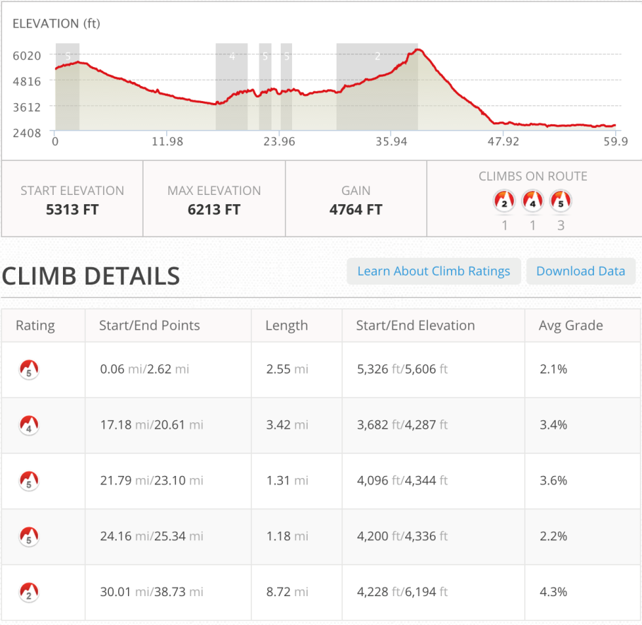
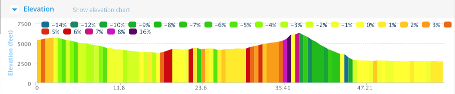
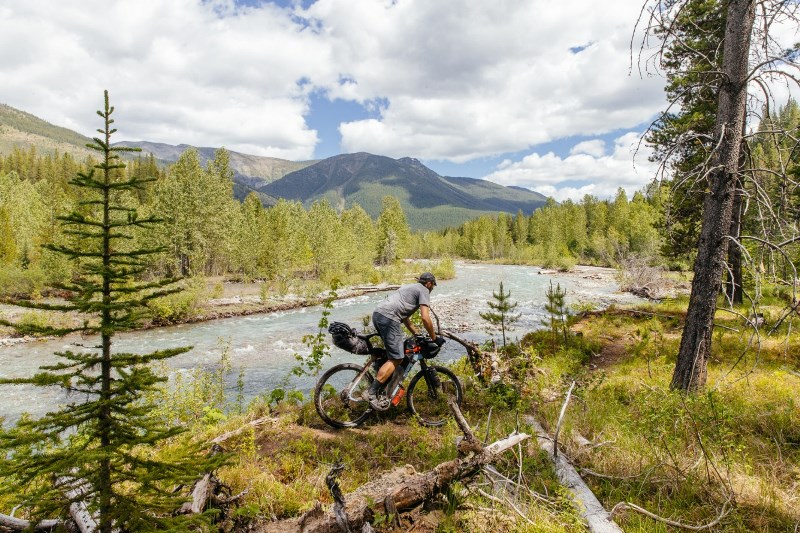
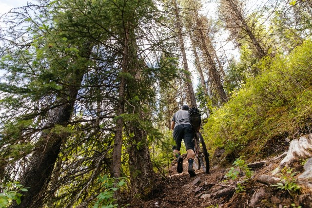
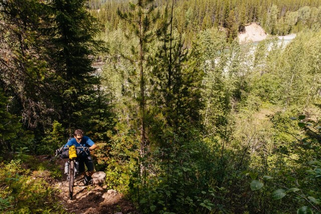
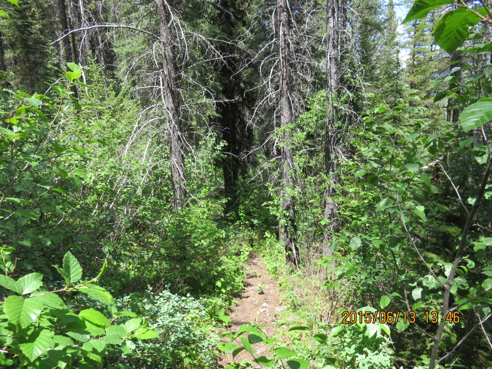
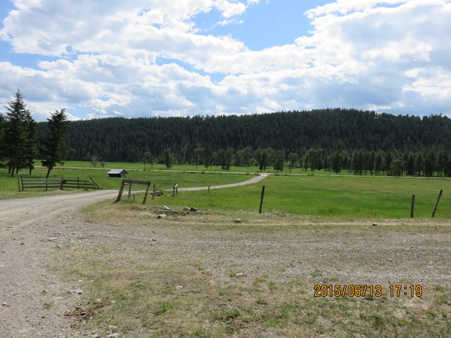
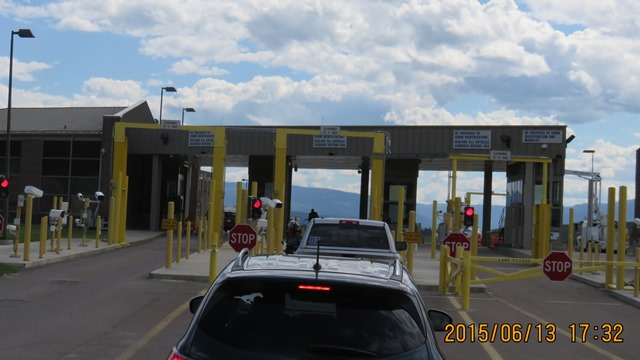
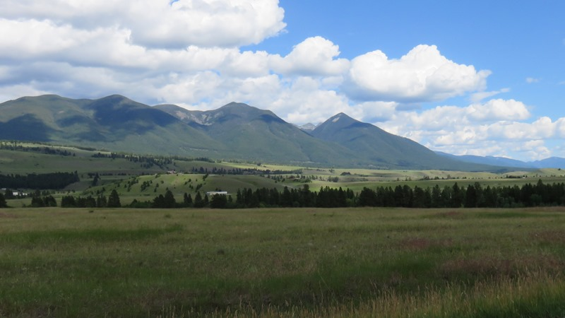
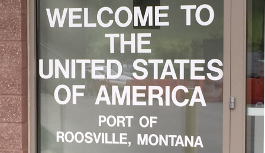

A sunny morning on top of Cabin Pass
Not much sleep at the top of Cabin Pass. It was cold and wet but I was warm and reasonably dry in my
sleeping bag
and tarp/tent. After waking up about 6am I dumped all my wet stuff out into the trail/road. As I was getting
orgainized riders started coming past.
They had traveled 195 miles from the start 22 hours before. I also learned that seven others had come thru
earlier in the morning.
If I didn't know it already I really learned how far in over my head I was.
So there I stood with stuff all over the place trying to get the wet gear back into some kind of order. By
the time
I got it all back on the bike the sun was fully up and within a mile I would be walking again.
 Mt Doupe from the trail to Cabin Pass
Mt Doupe from the trail to Cabin Pass
Mornings are for going up
The final two miles to the top took a while but the downhill from Cabin Pass was nice and easy. Stopped for a snack with another rider and then continued on my way along the river toward Galton Pass.


The Wall
The next challenge between the bottom of Cabin Pass and the beginning of Galton Pass was to get up the WALL.
This is a section added a few years ago which is unridable. Pictures and descriptions don't begin to
explain ...
I knew it was out there and after traveling along a single track area along the river I once
again
thought I had lost the trail. It didn't take long to determine the vertical section in front of me was the
WALL.
There weren't even any tire tracks!

Photo from theradavist.comAfter mulling this over for a bit I decided that if everyone else could do it I could do it. I hoisted the bike up the trail while trying to take a couple steps up onto a root and a rock. I finally got up about 20 feet above the valley floor and was trying to take a break without falling back down.

Photo from theradavist.comI then heard someone say “If you’re stuck, I’m stuck”. I looked down and there was a rider waiting for me to get up the wall. This was incentive enough for me to carry the bike and take about 20 steps up to a spot that was a bit flatter. Luckily I didn’t hold him up very long. He was probably in 12th place at the time!!! I meet a rider at Holland LAke who had designed a special strap just for the wall so he could strap his bike to his back.

Photo from theradavist.comI had a second rider come by me on the second section of the WALL but he had an easier time getting by. Next up was the third mountain pass on this section from Sparwood to the US border. Galton Pass. The previous pass (Cabin) had a 10 mile approach. Galton was steep for the last 5 or so which I walked. A number of switchbacks at least reduced the grade.

After the wall I still wasn't ridingGalton Pass

Switchback on road to Galton Pass. Switchbacks reduce the grade but also can beat you down since you can't really tell how many there are. This was 3 miles from the top. I took off my helmet and laid my backpack across the handlebars and walked on up. It took about an hour.

The nine miles from the valley to Galton Pass took 3 1/2 hours. The steepest section took an hour to cover 2.4 miles.

Once again the top wasn’t significant other than I could begin riding and it was a real nice downhill.
The eight miles down from pass to valley took 40 minutes.
At the end you could see out into the valley below and the road leading to the US border crossing. The rest
of the
trip to the border was flat and easy. I had a few minute wait and then in true Tour Divide fashion it was
off the main road to a side road.

Roosville - US Border

Across the border you got the sense the terrain was going to be different. Much more "Big Sky" than sharp mountains.

The view from airport road south of RoosvilleSomewhere at the border my tracker stopped working for the second time. It was another 8 miles to Eureka and a hotel and Subway combination. Before I knew it I had eaten two whole subway sandwiches and about 3 bottles of chocolate milk. Lots of riders in town and at the hotel. My tires have held up for the past few days so I was feeling much better about the ride.
To go places and do things that I've never done before – that’s what living is all about.
Nice to be back in the USACDMBR - 5 days in Canada - many lessons learned
So I had completed the ~250 miles along the trail in Canada. It took at least an extra day but I learned
many things during the first week which would help as I moved forward.
I had
• my notube tires fail me competely. I was now carrying five tubes
- 2 in the tires and three spares.
• lost a helmet and gotten a new one.
• Slept on the top of a mountain pass in the rain and below
freezing temps.
• Determined that as a biker I'm a pretty good hiker.
• Shipped 10 lbs of stuff back to New Jersey and knew that I was
still
carrying to much "stuff"
Text by Jim O'Brien Photographs by Jim O'Brien unless otherwise notedTD on Flickr.